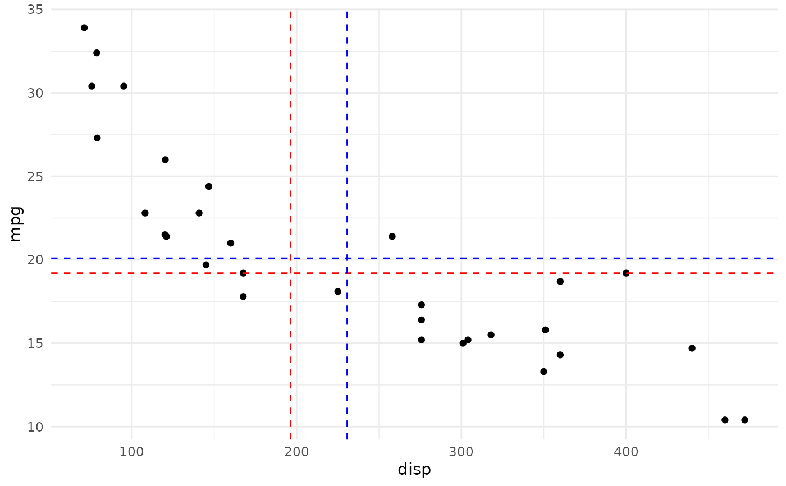
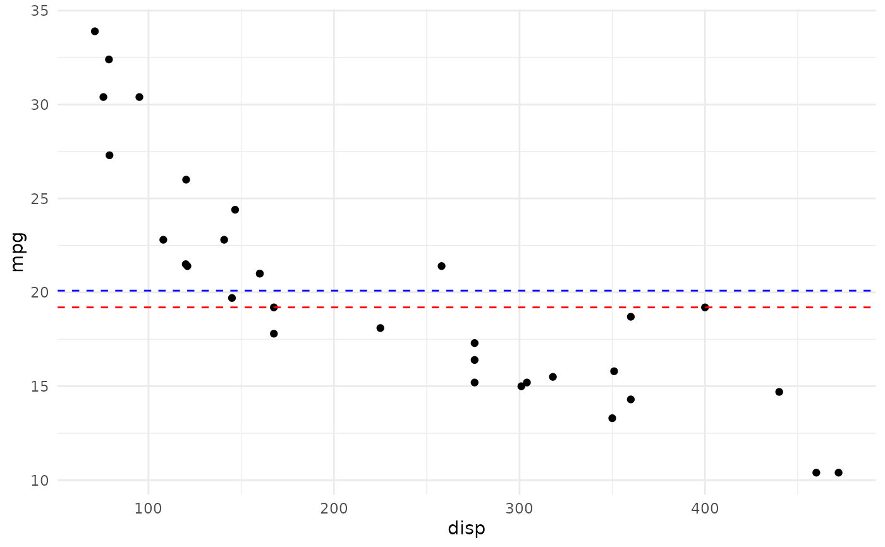
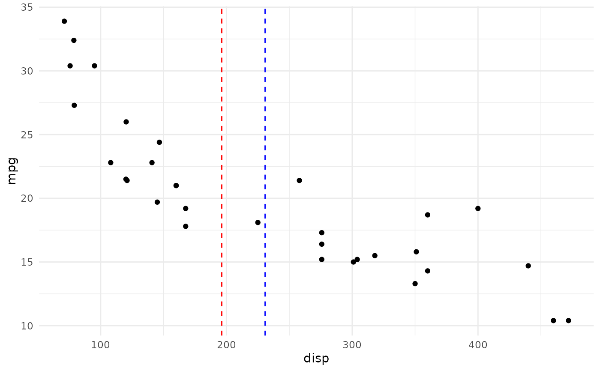
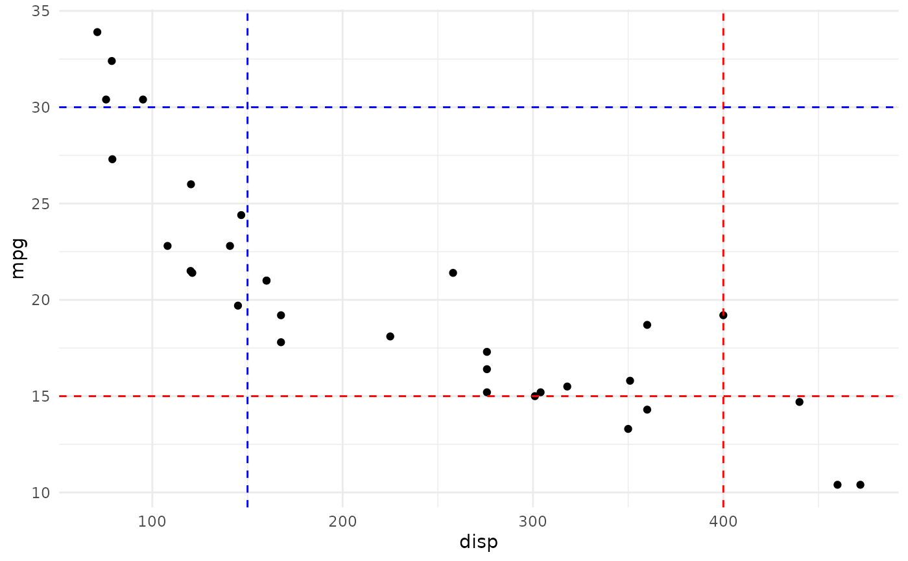

These geoms can be used to draw horizontal or vertical reference
lines in a ggplot. They use the data in the aesthetics v_var and h_var
to compute their median or mean and draw the as a line. This is copied directly from nflplotR.
Usage
geom_median_lines(
mapping = NULL,
data = NULL,
...,
na.rm = FALSE,
show.legend = NA,
inherit.aes = TRUE
)
geom_mean_lines(
mapping = NULL,
data = NULL,
...,
na.rm = FALSE,
show.legend = NA,
inherit.aes = TRUE
)Arguments
- mapping
Set of aesthetic mappings created by
aes().- data
The data to be displayed in this layer. There are three options:
If
NULL, the default, the data is inherited from the plot data as specified in the call toggplot().A
data.frame, or other object, will override the plot data. All objects will be fortified to produce a data frame. Seefortify()for which variables will be created.A
functionwill be called with a single argument, the plot data. The return value must be adata.frame, and will be used as the layer data. Afunctioncan be created from aformula(e.g.~ head(.x, 10)).- ...
Other arguments passed on to
layer(). These are often aesthetics, used to set an aesthetic to a fixed value, likecolour = "red"orsize = 3. They may also be parameters to the paired geom/stat.- na.rm
If
FALSE, the default, missing values are removed with a warning. IfTRUE, missing values are silently removed.- show.legend
logical. Should this layer be included in the legends?
NA, the default, includes if any aesthetics are mapped.FALSEnever includes, andTRUEalways includes. It can also be a named logical vector to finely select the aesthetics to display.- inherit.aes
If
FALSE, overrides the default aesthetics, rather than combining with them. This is most useful for helper functions that define both data and aesthetics and shouldn't inherit behavior from the default plot specification.
Value
A ggplot2 layer (ggplot2::layer()) that can be added to a plot
created with ggplot2::ggplot().
Aesthetics
geom_median_lines() and geom_mean_lines() understand the following
aesthetics (at least one of the bold aesthetics is required):
v_var - The variable for which to compute the median/mean that is drawn as vertical line.
h_var - The variable for which to compute the median/mean that is drawn as horizontal line.
alpha = NA- The alpha channel, i.e. transparency level, as a numerical value between 0 and 1.color = "red"- The color of the drawn lines.linetype = 2- The linetype of the drawn lines.size = 0.5- The size of the drawn lines.
See also
The underlying ggplot2 geoms geom_hline() and geom_vline()
Examples
library(cfbplotR)
library(ggplot2)
# inherit top level aesthetics
ggplot(mtcars, aes(x = disp, y = mpg, h_var = mpg, v_var = disp)) +
geom_point() +
geom_median_lines() +
geom_mean_lines(color = "blue") +
theme_minimal()
#> Warning: Using the `size` aesthetic with geom_segment was deprecated in ggplot2 3.4.0.
#> ℹ Please use the `linewidth` aesthetic instead.

# draw horizontal line only
ggplot(mtcars, aes(x = disp, y = mpg, h_var = mpg)) +
geom_point() +
geom_median_lines() +
geom_mean_lines(color = "blue") +
theme_minimal()

# draw vertical line only
ggplot(mtcars, aes(x = disp, y = mpg, v_var = disp)) +
geom_point() +
geom_median_lines() +
geom_mean_lines(color = "blue") +
theme_minimal()

# choose your own value
ggplot(mtcars, aes(x = disp, y = mpg)) +
geom_point() +
geom_median_lines(v_var = 400, h_var = 15) +
geom_mean_lines(v_var = 150, h_var = 30, color = "blue") +
theme_minimal()
